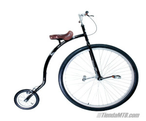

Pedalópolis
Pedalópolis es una tienda única donde la pasión por las bicicletas se encuentra con la creatividad y el servicio personalizado. Especializada en la reparación de todo tipo de bicicletas, ofrece soluciones rápidas y eficientes para ciclistas urbanos y aventureros. Además, en Pedalópolis encontrarás una selección exclusiva de bicicletas poco convencionales, como monociclos, tandems y modelos vintage, ideales para quienes buscan un estilo único sobre ruedas. ¡Pedalópolis es el destino perfecto para los amantes de las bicicletas que buscan algo diferente!
Bicicleta: Moderna y práctica, ideal para moverte con estilo y comodidad en la
ciudad.
Monociclo: ¡Atrévete a probar el equilibrio! Perfecto para ciclistas que buscan algo
diferente y
desafiante.
Tándem: La bicicleta para dos que ofrece una experiencia de pedaleo compartida, ideal
para paseos
en pareja o con amigos.

Bicicleta de rueda alta: Un clásico vintage que no pasa de moda, perfecto para
destacar y revivir
el encanto de épocas pasadas